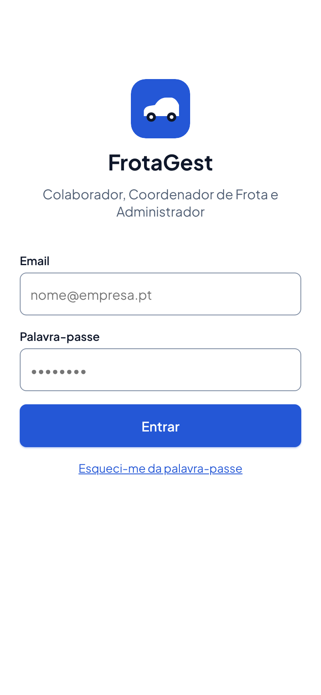
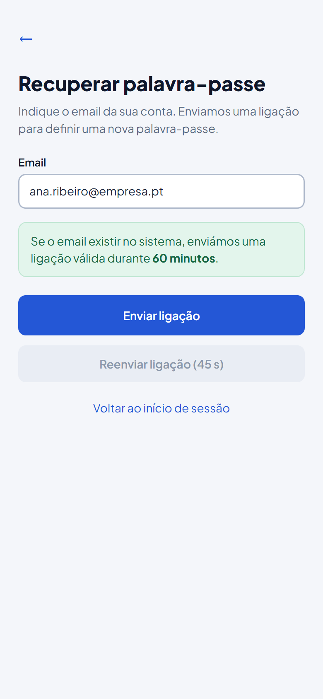
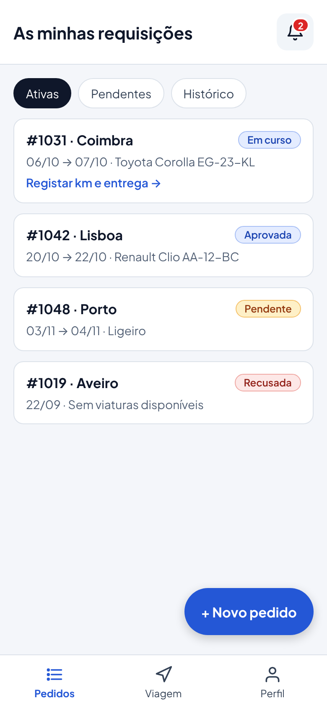
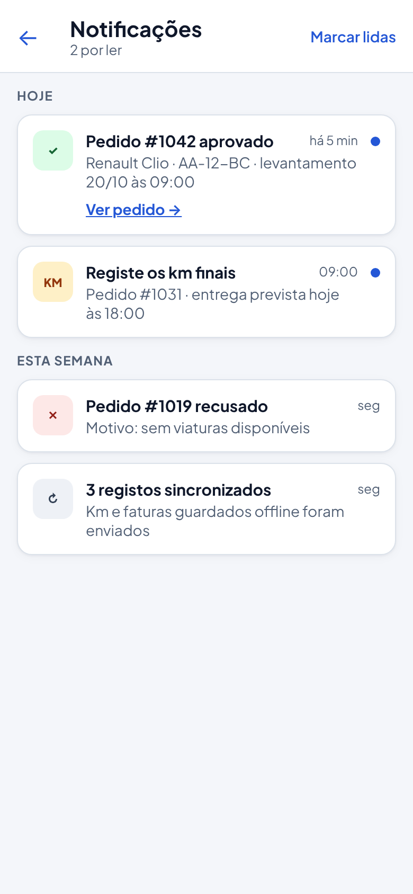
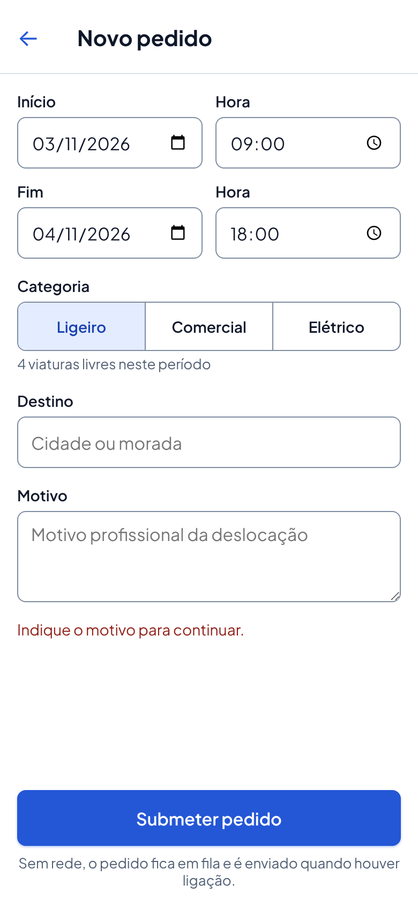
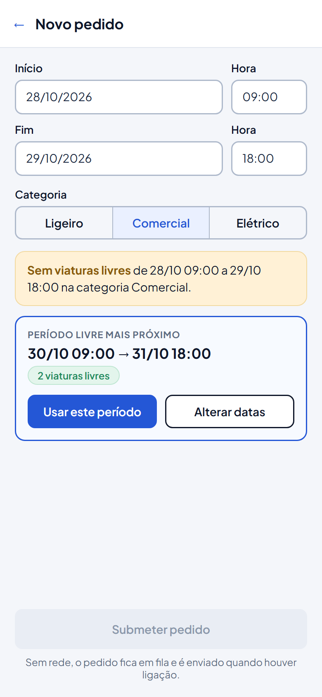
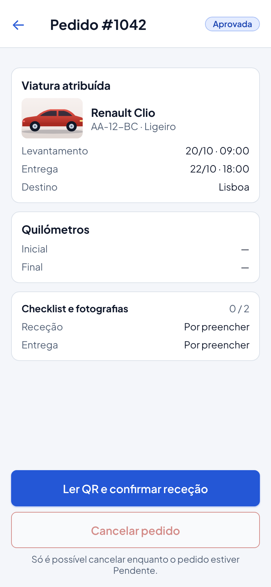
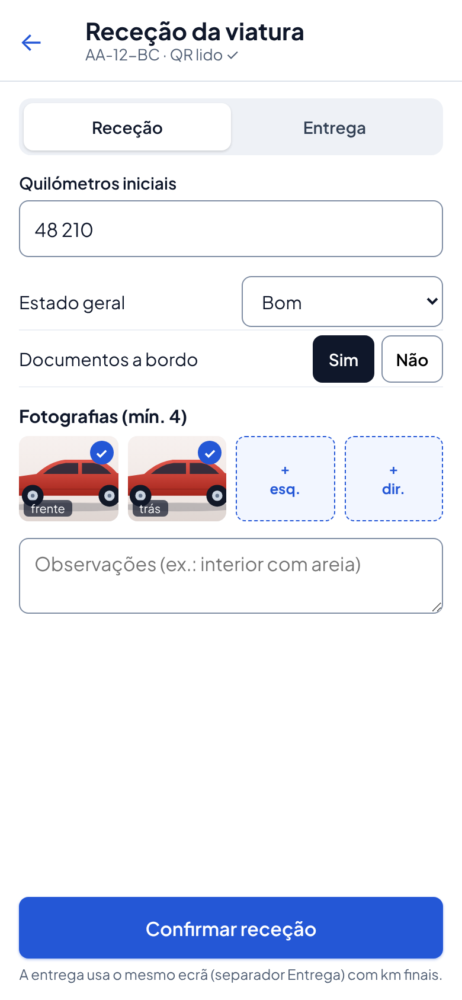
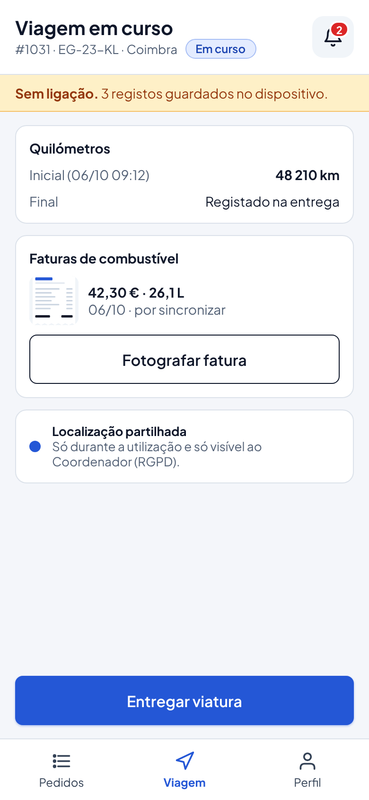
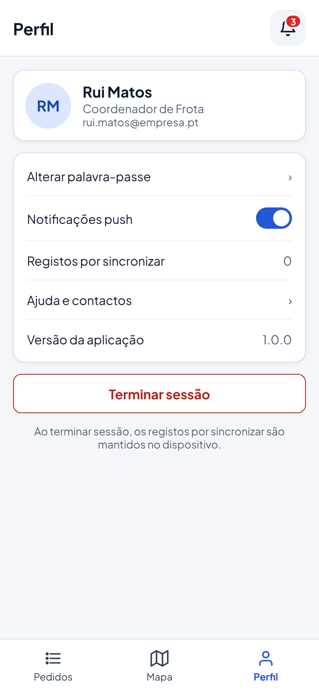

O que entregar, o que mostrar e como defender, para cada um dos cinco critérios da Etapa 1 (Projeto_Critérios_Avaliação_Etapa1.pdf). Cada passo diz o que fazer, onde vai (que slide, que parte do Word) e porquê.
A Etapa 1 vale 20 % do projeto. Entrega-se no Moodle até 07/11/2026 às 23h59 e apresenta-se em aula entre 09/11 e 13/11: 10 minutos + 5 de discussão, com os três elementos a falar. Avaliam-se cinco critérios: contexto (10 %), requisitos + mockups (25 %), planeamento por elemento (20 %), apresentação oral (15 %) e justificações (30 %).
Este manual foi feito a partir de Projeto_Critérios_Avaliação_Etapa1.pdf e do Enunciado Projeto Pratico - AMSI, e a informação dos slides vem da Especificação do SI (Word). Para saber como cumprir os requisitos técnicos da Etapa 2, vê o manual do enunciado.
Marca cada passo quando o tiveres feito. O progresso fica guardado no browser.
A Etapa 1 é a apresentação intermédia do projeto de AMSI: o grupo mostra, em slides, a ideia, os requisitos, os mockups e o planeamento. Vale 20 % da nota do projeto (a Etapa 2, a aplicação pronta, vale 50 %). O PDF dos critérios define as cinco coisas que o júri avalia e quanto vale cada uma:
| Critério | Peso | O que o PDF pede | O que tens de mostrar |
|---|---|---|---|
| Contextualização do projeto | 10 % | Contextualização do Projeto | O problema, a solução, quem usa, o que já existe no mercado |
| Levantamento de requisitos | 25 % | Análise e definição de requisitos: mockups da UI e requisitos | Requisitos funcionais e não funcionais da app + os ecrãs desenhados |
| Planeamento do projeto | 20 % | Tarefas, previsão de tempo e elemento do grupo a desenvolver, por elemento | Quem faz o quê e quando, até 16/01/2027 |
| Apresentação oral | 15 % | Todos os elementos participam, 10 min | Falar bem, a horas, os três a apresentar |
| Justificações | 30 % | Justificação de opções/ideias; dificuldades esperadas e soluções propostas | O porquê de cada escolha e o que pode correr mal |
jira_user_stories.csv serve de fonte, mas a informação tem de estar copiada para os slides.Hoje é 01/11/2026. O prazo é daqui a 6 dias (sábado, 07/11). Um plano realista, para três elementos (é uma sugestão, ajusta ao vosso horário):
| Dia | O que fazer | Passo do manual |
|---|---|---|
| Dom 01/11 | Reunião: ler os critérios e o enunciado, dividir os slides pelos três, escolher o formato | 1, 2, 12 |
| Seg 02/11 e Ter 03/11 | Fazer os slides de contexto, requisitos e mockups | 5, 6, 7 |
| Qua 04/11 | Fazer planeamento, justificações e dificuldades | 9, 10, 11 |
| Qui 05/11 | Revisão cruzada (cada um revê o slide de outro); atualizar os mockups para o menu hamburguer | 7 |
| Sex 06/11 | Ensaio cronometrado (10 min), exportar o PDF e submeter no Moodle | 12, 13 |
| Sáb 07/11 | Margem de segurança até às 23h59 (só se algo falhar) | 13 |
| 09 a 13/11 | Apresentação em aula (dia na lista do Moodle) | 14 |
A apresentação segue a ordem dos critérios: contexto → requisitos e mockups → planeamento → justificações e dificuldades. Cada slide leva uma linha de "porquê".
Proposta de 13 slides para 10 minutos. O tempo de cada bloco segue o peso do critério (as justificações têm de ter tempo):
| # | Slide | Critério | Tempo |
|---|---|---|---|
| 1 | Capa: nome, grupo, elementos | — | 0:20 |
| 2 | O problema e a solução | Contexto 10 % | 0:50 |
| 3 | Quem usa a app (role) e o que já existe | Contexto 10 % | 0:40 |
| 4 | Arquitetura: app + API + base de dados | Requisitos / Justificações | 0:40 |
| 5 | Requisitos funcionais da app | Requisitos 25 % | 1:00 |
| 6 | Requisitos não funcionais | Requisitos 25 % | 0:40 |
| 7 | Mockups (1/2): login, pedidos, novo pedido | Requisitos 25 % | 0:50 |
| 8 | Mockups (2/2): detalhe, checklist, viagem, perfil | Requisitos 25 % | 0:50 |
| 9 | Planeamento por elemento (tarefas, SP) | Planeamento 20 % | 1:00 |
| 10 | Calendário e sprints até 16/01 | Planeamento 20 % | 0:40 |
| 11 | Justificações das opções técnicas | Justificações 30 % | 1:30 |
| 12 | Dificuldades esperadas e soluções | Justificações 30 % | 1:00 |
| 13 | Conclusão e próximos passos | — | 0:20 |
O Word tem 28 requisitos funcionais da app (RF-AM-01 a 28) e 21 não funcionais (RNF-01 a 21). Não os leias todos: agrupa-os. Os do Colaborador (a app, por agora) organizam-se assim:
| Grupo | Requisitos da app | Ideia |
|---|---|---|
| Conta | RF-AM-01 (login), 02 (recuperar palavra-passe), 03 (perfil, terminar sessão) | Entrar e sair |
| Pedidos | RF-AM-04 (catálogo), 05 (calendário), 06 (submeter), 07 (lista e detalhe), 08 (cancelar) | Fazer e acompanhar requisições |
| Utilização | RF-AM-09 (QR), 10 e 11 (check-in/out com 4 fotos), 12 (km), 13 (fatura), 16 (viagem em curso) | Levantar, usar e entregar a viatura |
| Sem rede e GPS | RF-AM-14 (guardar offline e sincronizar), 15 (enviar localização) | Funcionar sem ligação |
| Avisos | RF-AM-17 (push), 24 (lista de notificações), 28 (enviar erros ao log) | Ser avisado |
Requisitos não funcionais que mais interessam à app (slide 6):
| RNF | O que diz |
|---|---|
| RNF-01 | Submeter uma requisição em no máximo 5 passos |
| RNF-02 | Ecrãs adaptados a vários tamanhos, legíveis ao ar livre |
| RNF-05 | Guardar localmente sem rede e sincronizar sem perder dados |
| RNF-09 | Token de acesso em cada pedido e comunicações HTTPS |
| RNF-11 | Localização só enquanto a viatura está em uso (RGPD) |
| RNF-13 | API a responder em menos de 2 segundos |
| RNF-17 | Android, com câmara e localização |
| RNF-19 / 20 / 21 | REST + JSON; código no GitHub; Scrum com sprints quinzenais |
O critério dos requisitos inclui os mockups da UI. O Word já tem os desenhos dos ecrãs da app (Figuras 34 a 49). Para o Colaborador usam-se estas 10, que extraí do Word para a pasta Android/mockups/ (clica para ver grande):










Um só desenho, simples:
O critério pede: tarefas, previsão de tempo e elemento do grupo a fazer cada uma. O Word já tem as user stories com story points (SP). As da app para o Colaborador são:
| US | Tarefa da app | SP |
|---|---|---|
| US26 | Login na app (e acesso guardado no dispositivo) | 2 |
| US25 | Recuperar a palavra-passe | 3 |
| US1 | Catálogo e disponibilidade de viaturas | 3 |
| US2 | Submeter requisição de viatura | 5 |
| US3 | Estado dos pedidos e histórico, com detalhe (master-detail) | 3 |
| US4 | Quilómetros e fotografias no check-in/check-out | 5 |
| US5 | Anexar fatura de combustível | 2 |
| US6 | Modo offline e QR | 5 |
| US27 | Notificações | 3 |
| Total | 31 |
É o critério com mais peso. Para cada escolha técnica, dizes o que escolheste e porquê. Faz uma tabela de três colunas. Sugestão de linhas (as que são obrigatórias estão marcadas; as outras são propostas do grupo que deves confirmar):
| Opção | Porquê | Fonte |
|---|---|---|
| App Android em Java | É a tecnologia da UC e do enunciado (aplicação para dispositivos Android) | Enunciado, RNF-17 |
| Volley para o webservice (obrigatório) | O enunciado diz que outra biblioteca não conta para a avaliação. Faz pedidos assíncronos e não bloqueia o ecrã | Enunciado |
| API REST com JSON | Pedido pelo enunciado (REST/RESTful) e pelo RNF-19; serve também o website | Enunciado, RNF-19 |
| Token + HTTPS | Só quem iniciou sessão acede aos dados; a palavra-passe não anda em claro | RNF-09 |
| SharedPreferences (obrigatório) | Guarda o endereço do servidor e a sessão, sem pedir login a cada uso | Enunciado, US26 |
| SQLite (obrigatório), não Room | Guarda os registos feitos sem rede até haver ligação; o Room não é contabilizado | Enunciado, RNF-05, US6 |
| Menu hamburguer + fragmentos | O enunciado exige fragmentos; a navegação lateral é a da Ficha 4 | Enunciado, Ficha 4 |
| Só o Colaborador usa a app (por agora) | Os outros roles trabalham melhor no website; a app foca o uso no terreno | Decisão do grupo |
| Câmara e QR | Para identificar a viatura e fotografar o estado ao levantar e entregar | US4, US6, RF-AM-09 |
| Localização GPS | Para o coordenador ver a viatura no mapa, só enquanto está em uso | US15, RNF-11 |
| Notificações push (FCM) | Avisar o colaborador sem ele abrir a app | RF-AM-17 |
O PDF pede-o expressamente. Mostra um quadro dificuldade → solução:
| Dificuldade esperada | Solução proposta |
|---|---|
| A API ainda não está feita e a app depende dela (três UC diferentes) | Combinar os serviços e os nomes dos campos com SIS cedo; começar pelos ecrãs e pelo login; usar dados de exemplo até a API responder |
| Modo offline: não perder registos e não duplicar | Fila em SQLite com id local por registo; enviar só quando há rede e apagar apenas o que a API confirmou |
| Fotografias grandes lentas de enviar | Reduzir a imagem (cerca de 1280 px) antes do envio |
| Câmara, localização e notificações pedem permissões | Pedir cada uma só no ecrã onde é preciso e tratar o caso de o utilizador recusar |
| Localização gasta bateria e levanta privacidade (RGPD) | Enviar só enquanto a viatura está em uso e em intervalos de 30 s |
| Configurar notificações push (Firebase) é demorado | Deixar para o fim do planeamento; o resto da app não depende dele |
| Três pessoas a mexer no mesmo código | GitHub com um ramo por elemento, pedidos de junção e commits frequentes |
| Prazo curto até à entrega de 16/01/2027 | Sprints quinzenais e as funcionalidades mais difíceis (offline, QR) começadas cedo |
As Justificações, com 30 %. Por isso cada slide técnico tem uma linha de "porquê".
Não. O enunciado diz que links externos não são aceites: o planeamento tem de estar dentro do documento entregue.
Sim, "todos os elementos do grupo têm de participar na apresentação". Quem não fala perde nota na oral.
É o mesmo: o documento (PPTX ou PDF) entregue no Moodle é o que se mostra em aula.
A Etapa 1 pede ideia, mockups, requisitos e planeamento; a app pronta é a Etapa 2. Uma captura do login e do menu pode apoiar um slide, mas não substitui os mockups.
Servem como base, mas a app usa menu hamburguer e os desenhos têm barra de separadores. Atualiza para não haver contradições.
O enunciado escreve 07/11/2025 e os critérios 7/11/2026. Vale 2026 (ano letivo 2026/27). Confirma no Moodle.
Exporta para PDF antes de entregar; os tipos de letra do PPTX podem faltar.
Corta texto, não slides de justificações. Ensaia com cronómetro.
Reparte os slides à partida (passo 12) e ensaia a ordem de passagem.
Usa o link do teu turno prático e confirma o estado "submetido".
O Word não tem a divisão do trabalho: o grupo decide e põe os nomes no planeamento.
São uma sugestão: ajusta ao calendário do grupo e às datas de avaliação do curso.
A Tabela 5 do Word ainda dá app ao Coordenador e ao Administrador. O grupo decidiu, por agora, só o Colaborador; o Word será corrigido mais tarde. Nos slides diz "por agora".
Menu hamburguer em vez de barra de separadores.
Etapa 1 com ano 2025 no enunciado: gralha. Etapa 2: 16/01/2027 (enunciado) e 06/02/2027 (capa do relatório do Word, de outras UC): confirmar qual vale para AMSI.